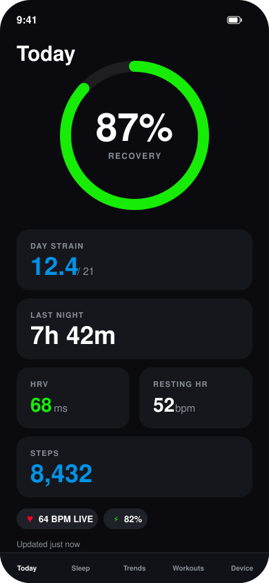

OpenWhoop
Swift · SwiftUI · CoreBluetooth
A native iOS companion app for the WHOOP 4.0 fitness band that reverse-engineers its Bluetooth protocol to compute recovery, strain, sleep, and HRV metrics locally — without WHOOP's own cloud service or account.
- Reverse-engineered the WHOOP 4.0 Bluetooth protocol to stream biometric data without an account
- Built on-device computation of HRV, sleep stages, and strain/recovery, replacing the cloud pipeline
- Designed clock-correlation and backfill logic to reconcile device timestamps